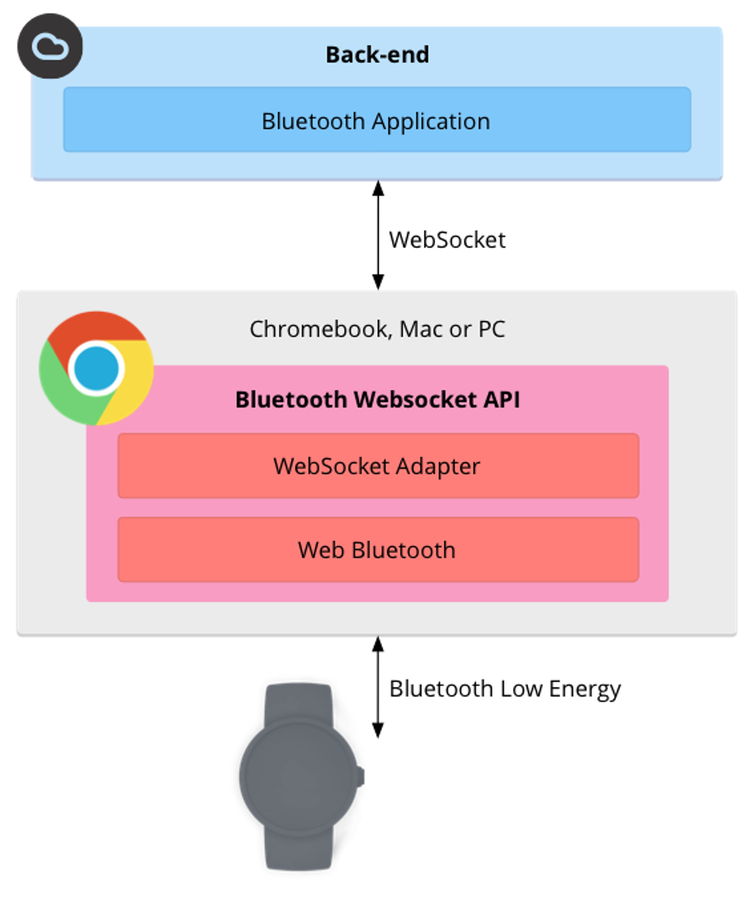

Boosting Bluetooth Developer Experience with Web Bluetooth
Mithil Raut, Silicon Labs
Web Bluetooth allows web applications to communicate directly with IoT devices using Bluetooth LE.
> It’s a Bluetooth API specification developed by the World Wide Web Consortium (W3C).
> The device acts as a Central and can communicate with other devices over Bluetooth 4 acting as a peripheral.
> A "Bluetooth Internals" page is available in Chrome to inspect everything about nearby Bluetooth devices: status, services, characteristics, and descriptors.

Advantages
Scalability: Applications are scalable. Eliminates the need to a dedicated software or native apps.
Security: Websites can communicate with nearby Bluetooth devices in a secure and privacy preserving way. Requires HTTPS on website. Must be triggered by a user gesture.
User Experience: Enhances user experience in Bluetooth learning, interaction and application development.
Developer Experience: JavaScript based API makes it fast, easy to implement, run locally and integrate seamlessly with other web development languages.
Platform support: A subset of the Web Bluetooth API is available in Chrome OS, Chrome for Android M, Mac (Chrome 56) and Windows 10 (Chrome 70).